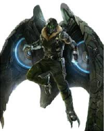
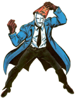
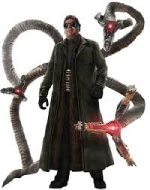
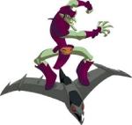
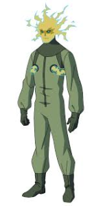
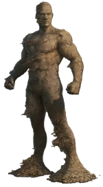
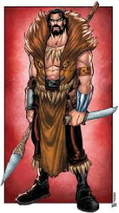

Principais Inimigos
- Abutre:
- Abutre é o codinome usado por vários vilões de histórias em quadrinhos publicadas pela Marvel Comics. Adrian Toomes foi o primeiro usuário da alcunha e o segundo supervilão que o Homem-Aranha encontrou em suas primeiras histórias. Ao longo dos anos, outros personagens tomaram o manto como inimigos do Homem-Aranha, mas Adrian Toomes ainda é o Abutre mais recorrente.

- Camaleão
- O Camaleão ou Dmitri Anatoly Nikolayevich Smerdyakov é um supervilão das histórias em quadrinhos americanas da Marvel Comics, criado por Stan Lee e Steve Ditko. Apareceu pela primeira vez em The Amazing Spider-Man #1 (março de 1963). Além do ladrão que matou o tio Ben, o Camaleão foi o primeiro inimigo do Homem-Aranha. Tendo por alter ego Dimitri Smerdyakov é o meio-irmão mais novo de Sergei Nikolaevich Kravinoff, mais conhecido como Kraven, o Caçador, com quem morou na Rússia antes de ambos se mudarem para o EUA e virarem vilões do Amigão da Vizinhança.

- Doutor Octopus
- Doutor Octopus é um personagem de quadrinhos da Marvel Comics, um supervilão que é um dos arqui-inimigos do Homem-Aranha. Criado pelo roteirista Stan Lee e o artista Steve Ditko, o personagem apareceu pela primeira vez em The Amazing Spider-Man #3 (julho de 1963),e é um cientista que usa quatro tentáculos mecânicos. Em certo ponto, após tomar posse do corpo de Peter Parker, decidiu se tornar o anti-herói Homem-Aranha Superior. Foi nomeado como o 28º Maior Vilão dos Quadrinhos de Todos os Tempos pela IGN em 2009, e o site também nomeou Octopus como o maior adversário do Homem-Aranha.

- Duende Verde
- O Duende Verde é o alter-ego de Norman Osborn, um supervilão fictício que aparece nas histórias em quadrinhos norte-americanas publicadas pela Marvel Comics. O personagem foi criado pelo escritor Stan Lee e pelo artista Steve Ditko, aparecendo pela primeira vez na revista The Amazing Spider-Man #14 (julho de 1964). O chefe industrial e amoral da Oscorp tomou uma fórmula que aprimorou as suas capacidades físicas e seu intelecto, mas também o levou à loucura.

- Electro
- Electro, alto-ego de Maxwell Dillon, é um vilão do Homem-Aranha que aparecem nas histórias em quadrinhos publicadas pela Marvel Comics. Maxwell Dillon, o primeiro Electro, é um inimigo do Homem-Aranha, que ganhou a habilidade de controlar a eletricidade depois de ser atingido por um raio enquanto trabalhava em uma linha de energia. Electro desde então se tornou um dos adversários mais duradouros do Homem-Aranha tornando-se parte da equipe desonesta conhecido como O Sexteto Sinistro.

- Homem Areia
- Homem-Areia (The Sandman em inglês) é um personagem das histórias em quadrinhos norte-americanas da Marvel Comics, criado por Stan Lee e Steve Ditko no ano de 1963, primitivamente como um inimigo do Homem-Aranha. Apesar de em determinado momento adotar o sobrenome Marko, o Homem-Areia não é parente de Cain Marko, o Fanático, da série X-Men.Em 2009, o Homem-Areia foi elencado como o 72º maior vilão de quadrinhos de todos os tempos.

- Kraven, o Caçador
- Kraven, o Caçador (em inglês: Kraven the Hunter; pseudônimo de Sergei Nikolaievich Kravinoff) é um personagem de quadrinhos (banda desenhada) da Marvel Comics e um dos vilões do Homem-Aranha. Criado por Stan Lee e Steve Ditko, na maioria das vezes um vilão, mas em alguns casos um anti-herói, o personagem apareceu pela primeira vez em The Amazing Spider-Man #15, em agosto de 1964. Possui uma relação de parentesco com o Camaleão, seu meio-irmão Dmitri Smerdyakov, com quem morou na Rússia.
